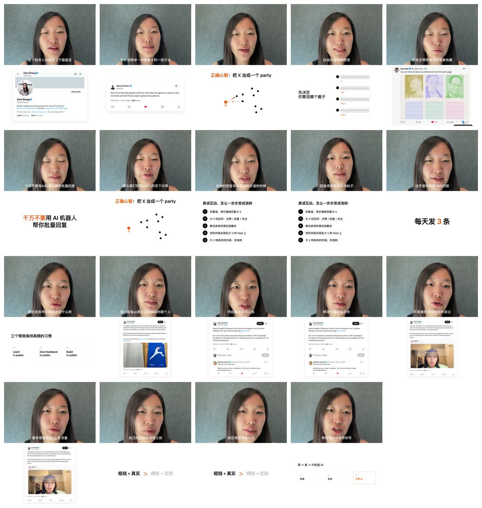
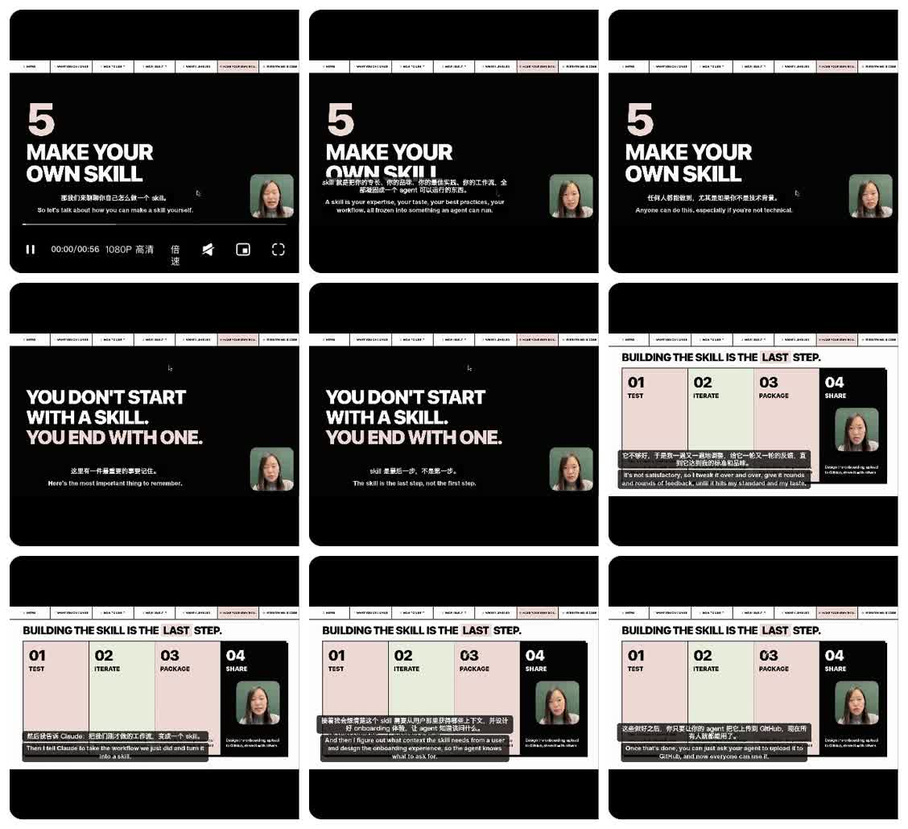

张咋啦小红书低素材视频拉片
这两条比很多高制作成本的知识区视频更接近我们要找的方向：工作方法、观点表达、低素材、可用 HTML/SVG 复刻。
faceless / 轻露脸
animated presentation
typography
低素材
工作型表达
这是什么风格？
低素材工作型 explainer。它不追求大片感，而是把一个工作方法讲清楚：大字标题、少量结构图、截图证据、口播节奏。
为什么值得学？
它把“普通人的日常工作经验”变成视频，不依赖历史资料、复杂插画、昂贵摄影和大量 B-roll。
怎么复刻？
先复刻第二条：黑底大字、四步流程、一个小头像/旁白窗口、逐步高亮。再把第一条的截图证据和真实口播感加进来。
01. 如何一年在 Twitter 涨粉 7 万：我做内容的方法
竖屏长视频，约 6 分 21 秒。核心是把 X 当成一个 party，而不是 stage：先参与对话，再建立连接。

粗结构
| 段落 | 内容功能 |
|---|---|
| 开场 | 用“投资人在帖子下留言”和一年涨粉结果建立可信度。 |
| 核心比喻 | 把 X 当成 party，而不是 stage。观众先得到一个可记住的框架。 |
| 方法展开 | 调教算法、真诚回复、高频发帖、公开学习和公开建设。 |
| 证据段 | 不断插入真实 X 截图，说明不是抽象鸡汤，而是她真实做过。 |
| 结尾 | 回到“真实、粗糙、先读再发，最后才轮到 AI”。 |
画面方法
- 主体是口播人脸，视觉上很“真实”，这补足了低素材视频容易缺的信任感。
- 素材主要是 X 页面截图、账号页、帖子评论、简单点阵示意图。
- MG 不复杂：大多是截图进入、关键词强调、列表出现、少量点线关系图。
- 字幕承担了很大信息量，画面只负责“证明”和“结构化”。
复刻判断
- 优点：低素材、真实、观点有个人经验支撑。
- 难点：需要本人出镜或至少有强个人口播；截图素材要足够真实。
- 适用：个人经验、增长方法、内容创作方法、工作方法复盘。
02. 做 skill 是你工作流的最后一步，不是第一步
横屏短视频，约 57 秒。它讲的是：先跟 AI 完成真实工作流，反复迭代，最后才把流程封装成 skill。

粗结构
| 时间点 | 内容功能 |
|---|---|
| 0-8s | 大标题：Make your own skill。直接建立主题。 |
| 8-20s | 反常识句：不要从 skill 开始，而是以 skill 结束。 |
| 20-57s | 四步框架：Test / Iterate / Package / Share，逐步解释每一步。 |
画面方法
- 极简黑底，白色超粗标题字，局部使用淡粉、淡绿、黑色分栏。
- 右下角保留一个小口播窗口，但主体仍然是文字和流程图。
- 所有视觉元素都能用 HTML/CSS/SVG 复刻：大字、色块、分栏、边框、标签、头像窗口。
- 它不靠素材，而靠“句子够强 + 结构够清楚 + 版式够稳”。
复刻判断
- 优点：复刻性价比最高，适合先做成 HyperFrames 模板。
- 难点：文字必须短、狠、清楚；否则黑底大字会变成普通 PPT。
- 适用：观点短视频、方法论短视频、AI 工作流教程、产品理念解释。
两条放在一起看，学什么？
第一条：真实感路线
核心资产人和真实经历。
主要画面口播 + 社媒截图 + 简单 MG。
制作成本低到中。难点不在动画，在真实素材和个人表达。
可借之处用真实截图当证据，避免变成抽象观点。
第二条：结构化路线
核心资产一句反常识观点和一个清楚流程。
主要画面大字、分栏、流程卡、小口播窗口。
制作成本低。基本可以直接用 HTML/CSS/SVG 做。
可借之处先用一句强观点打穿，再用流程承接。
对 HyperFrames 的直接启发
优先复刻第二条，不是第一条。因为第二条更接近一个可模板化的动画语法：黑底大字开场、关键句反转、四步流程展开、右下角小讲述者窗口。它能先验证“普通工作方法能不能被做成低素材 explainer”。
建议做成一个基础模板
- 开场：一个强观点大字压上来。
- 反转：一句 “You don't start with X. You end with X.” 式结构。
- 流程：三到四列步骤卡，每列只放关键词。
- 口播：小头像窗口或声波窗口，降低纯 PPT 感。
- 字幕：底部双语或中文精简字幕，不抢主画面。
下一步验证
- 先做 30-60 秒样片，不要一上来做完整长片。
- 选一个普通工作主题，比如“如何把一次 AI 协作沉淀成 skill”。
- 只用 4 类元素：大字、色块、流程卡、小头像/旁白窗口。
- 动画重点不是炫技，而是让观众清楚感到：观点出现、反转发生、流程被拆开。